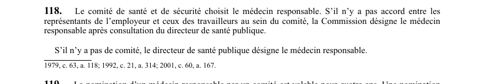

art-118-LSST : désignation du médecin responsable
Un article du wiki ⚖️ Recueil législatif
En bref
Trois voies de désignation du médecin responsable d'un établissement, selon qu'il existe un comité et qu'un accord s'y dégage.
- Voie normale : le comité de santé et de sécurité choisit lui-même le médecin responsable.
- Blocage au comité : faute d'accord entre les représentants de l'employeur et ceux des travailleurs, c'est la Commission qui désigne.
- La Commission ne tranche pas seule : elle doit d'abord consulter le directeur de santé publique.
- Aucun comité dans l'établissement : le directeur de santé publique désigne directement le médecin responsable.
- Durée de la nomination qui en découle : quatre ans si elle vient du comité, deux ans si elle vient de la Commission ou du directeur (art. 119).
🌐 LegisQuébec · 📄 PDF officiel (page 34)
Texte officiel : capture du PDF
{kind=link}

Toucher l'image pour l'agrandir🔗 Ouvrir a cette page : LSST.pdf : page 34 · texte a jour au 26 mars 2024
Voir aussi
- art. 116 : disposition abrogée · disposition-abrogée.
- art. 117 : nomination du médecin responsable · définition : un médecin peut être nommé responsable des services de santé d'un établissement si sa demande d'exercer sa profession aux fins du chapitre a été acceptée par la personne qui exploite un centre hospitalier ou un CLSC désigné dans le contrat.
- art. 119 : durée nomination médecin responsable · la nomination du médecin responsable par le comité est valable pour quatre ans; une nomination faite par la Commission ou le directeur de santé publique est valable pour deux ans.
- art. 120 : destitution du médecin responsable · obligation : une requête peut être adressée au Tribunal administratif du Québec pour destituer le médecin responsable d'un établissement; elle doit être fondée sur le défaut de qualification, l'incompétence scientifique, la négligence ou l'inconduite du médecin.
- ↑ Loi : LSST
Pages qui pointent ici (9)
- art-117-LSST : admissibilité du médecin responsable Recueil législatif
- art-119-LSST : durée nomination médecin responsable Recueil législatif
- art-120-LSST : destitution du médecin responsable Recueil législatif
- art-179-LMRSST : modifie l'art. 118 et 119 LSST Recueil législatif
- art-78-LSST : les 13 fonctions du comité de santé et de sécurité Recueil législatif
- LMRSST : Chapitre II : Modifications à la LSST Recueil législatif
- LSST : Chapitre VII : Inspecteur de la CNESST et révision Recueil législatif
- LSST, programmes et inspecteur Droit du travail
- PDFs de jurisprudence et de doctrine Recueil législatif